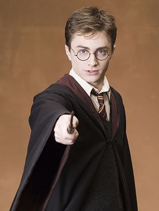

Rupert Alexander Lloyd Grint (Harlow, Essex, 24 de agosto de 1988) es un actor británico, conocido por interpretar a Ron Weasley en la serie de películas de Harry Potter. Obtuvo dicho papel a los once años, después de haber participado anteriormente solo en obras de teatro escolares y grupos de teatro locales.3 Protagonizó, junto a Daniel Radcliffe y Emma Watson, las ocho películas de la serie cinematográfica.4
Realizó su primera aparición fuera de Harry Potter en el largometraje Thunderpants dirigido por Pete Hewitt y estrenado el 24 de mayo de 2002. Protagonizó la comedia dramática Driving Lessons, estrenada el 8 de septiembre de 2006, donde compartió reparto con Julie Walters, actriz que encarnó a Molly Weasley —madre del personaje de Grint— en la saga de películas de Harry Potter,5 y Cherrybomb (2009), una cinta de bajo presupuesto de lanzamiento limitado. Además coprotagonizó la comedia Wild Target, junto a Bill Nighy y Emily Blunt. Su primer proyecto luego del final de la saga Harry Potter ocurrió en 2012, con la cinta antibélica Into the White.6
Thomas Andrew Felton1 (Surrey, Reino Unido, 22 de septiembre de 1987) es un actor y músico británico, conocido por interpretar a Draco Malfoy en la serie de películas de Harry Potter. Antes de ser elegido para interpretar a Draco Malfoy, participó (con resultados negativos) en los castings para Harry Potter y Ron Weasley. Felton fue elegido para interpretar a Draco a la edad de doce años, luego de haber participado en The Borrowers (1997) y Anna and the King (1999).2 Apareció en las ocho películas de la serie cinematográfica.3
Actualmente da vida al personaje de Julian Albert/Doctor Alchemy en la serie de The Flash
Es un aficionado de la pesca, estuvo implicado en la creación del World Junior Carp Tournament, un torneo "familiar" de pesca.
Felton es el menor de cuatro hermanos. Vivió en Epson, barrio de Surrey con sus padres junto a sus tres hermanos mayores. Estuvo en cuatro coros durante su infancia, empezando en el coro de su iglesia a los siete años. A los 11, comenzó a pescar diciendo que era su deporte preferido. Felton fue educado en West Horsley's Cranmore School, hasta los trece años
Daniel Jacob Radcliffe (Fulham, Londres, 23 de julio de 1989) es un actor inglés, popular sobre todo por haber protagonizado la saga cinematográfica de Harry Potter.1 2 3 Fundamentalmente por ello, ha cosechado una fortuna de 23 millones de libras esterlinas (algo más de 27 millones de euros), parte de los cuales ha destinado a organizaciones benéficas.
Hijo de un agente literario y una directora de casting, Daniel Jacob Radcliffe nace el 23 de julio de 1989 en Londres (Inglaterra). A una edad muy temprana, con tan sólo 5 años, comienza a sentirse atraído por el mundo de la interpretación y comienza a participar en obras escolares aunque no es hasta los nueve años cuando realiza su primera audición para un papel en televisión. Su debut tiene lugar en 1999 en el telefilme de BBC ‘David Copperfield’ en la que da vida al protagonista en su edad más temprana.
Su siguiente oportunidad llega en el año 2000 con ‘El sastre de Panamá’, que se estrenaría un año más tarde, y es durante el rodaje de esta película cuando se entera del comienzo de las audiciones para buscar al protagonista de ‘Harry Potter y la Piedra Filosofal (Harry Potter and the Philosopher's Stone)’. Tras varias pruebas, el actor consigue el papel en la adaptación cinematográfica de la famosa saga de libros de J. K. Rowling.
Emma Charlotte Duerre Watson (París, 15 de abril de 1990) es una actriz, modelo y filántropa británica, conocida por interpretar a Hermione Granger en la serie de películas de Harry Potter. Watson fue elegida para interpretar a Hermione a la edad de nueve años, después de haber participado anteriormente solo en obras de teatro escolares.2 Protagonizó, junto a Daniel Radcliffe y Rupert Grint, las ocho películas de la serie cinematográfica.3 Debido a su trabajo en Harry Potter, ha sido galardonada con varios premios y se estima que ha ganado £ 26 millones.4 5
Watson hizo su primera aparición fuera de Harry Potter en el telefilm Ballet Shoes transmitido por la BBC One el 26 de diciembre de 2007 y obtuvo una audiencia de 5,2 millones. En 2008, prestó su voz para la Princesa Pea en una película animada llamada The Tale of Despereaux, película basada en el libro homónimo de Kate DiCamillo. En 2011, participó en My Week with Marilyn, su primer trabajo después de finalizar la saga de Harry Potter. En 2012, protagonizó junto a Logan Lerman The Perks of Being a Wallflower, película basada en la novela homónima de Stephen Chbosky y fue elegida para interpretar a Illa de Noé, épica bíblica de Darren Aronofsky. En 2013, lanzó The Bling Ring, película de Sofia Coppola, en la que interpreta a Nicki. En octubre de 2013, fue elegida mediante una encuesta a nivel mundial realizada por la revista británica Empire como la Mujer más sexy de las estrellas cine.